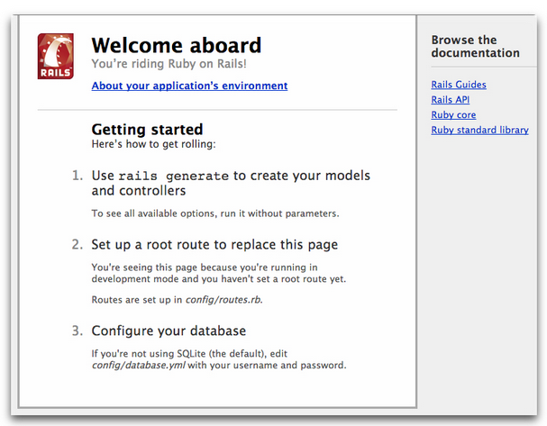

What is Rails?
March 13, 2016
As a new developer, learning Ruby on Rails is an excellent way to stay involved with new and established tech companies. Rails is a full-stack web application framework, which has both frontend and backend capabilities. The application is run on the programming language, Ruby, so it is important for developers to first undertstand Ruby before moving on to Rails. While Rails is very powerful, it is crucial to know what is going on under the hood of such a robust framework. Using Rails efficiently allows devlopers to increase productiving and create dynamic web applications.
Rails is an opinionated framework that assumes the best way to structure the code. This framework keeps best practices in mind, and will save a significant amount on time when writing code. DRY (Don't Repeat Yourself!) is a concept used throughout the programming world, and Rails helps to keep code concise so it does not need to be repeated multiple times. The risk of having code repeated throughout a program is the potential for bugs. In addition, Rails provides built-in testing, which ensures that the program is passing all basic tests as you write your application. Lastly, Rails follows the order of three default environments: development, testing, and production, which helps to improve the development cycle.
Overall, Rails is an excellent way to build fun and efficient web applications, so give it a shot!
